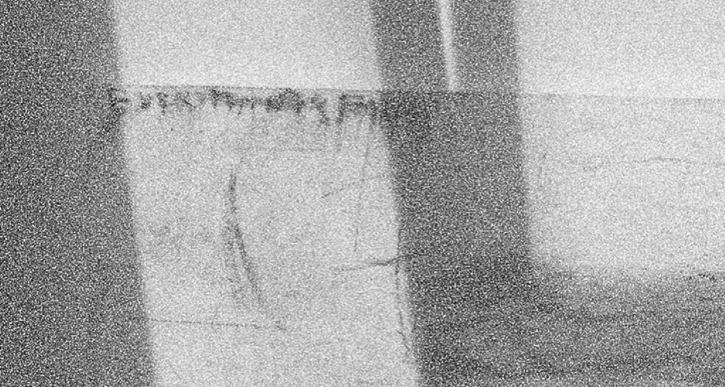

Everything is happening at the same time. The way time changes, the way spring comes. Winter and summer come at the same time inside your mind the way memories work. This site is an experimental website as I felt the need to create a space to present my work during these uncertain times. I consider this as a piece itself trying to create an organic relationship between the digital format and real-life artwork. Painting is a relevant medium but the limits of space and certain circumstances have driven me to external possibilities. Everything’s happening at the same time in the way a painting is being hung the way a painting is being painted those moments are what make the painting a painting. In this way a painting is never finished. It’s an organic thing how everything flows to a point. The way that all points come into one. Enjoy, I update it regularly so come back for more.
